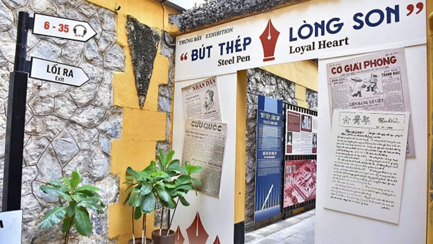
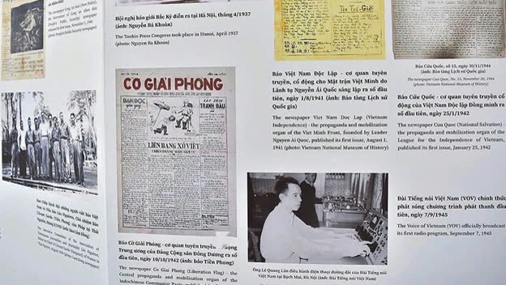
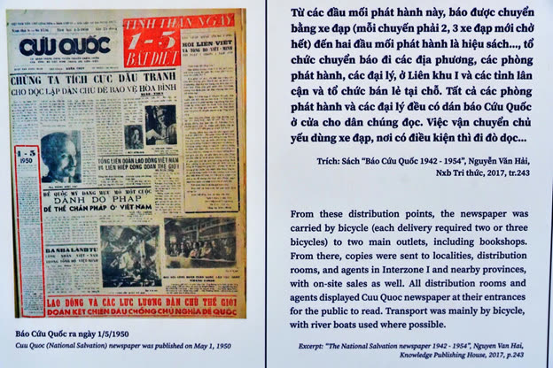
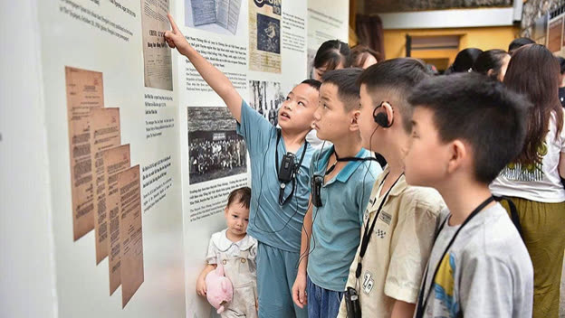
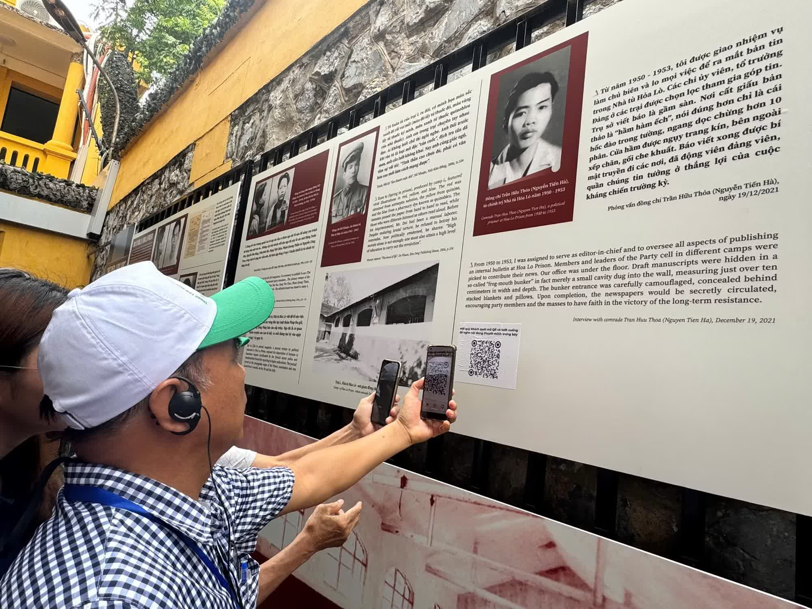

Sáng 16/6, tại Di tích lịch sử Nhà tù Hỏa Lò (Hà Nội), Ban Quản lý Di tích Nhà tù Hỏa Lò khai mạc trưng bày chuyên đề “Bút thép, lòng son” nhân kỷ niệm 101 năm Ngày Báo chí Cách mạng Việt Nam (21/6/1925 – 21/6/2026).
Trưng bày được tổ chức dưới sự chỉ đạo của Sở Văn hóa và Thể thao Hà Nội nhằm tôn vinh những người làm báo Cách mạng qua các thời kỳ, đồng thời tri ân các nhà báo, chiến sĩ đã cống hiến và hy sinh vì sự nghiệp đấu tranh giải phóng dân tộc, xây dựng và bảo vệ Tổ quốc.

Với ba nội dung chính gồm “Báo chí Cách mạng Việt Nam - Những dấu mốc lịch sử”, “Bút thép, lòng son” và “Tiếp nối dòng chảy”, trưng bày tái hiện hành trình hơn một thế kỷ phát triển của nền báo chí Cách mạng, đưa người xem ngược dòng thời gian trở về những ngày đầu hình thành nền báo chí Cách mạng với dấu mốc ra đời của Báo Thanh Niên do lãnh tụ Nguyễn Ái Quốc sáng lập năm 1925. Từ đó, báo chí không chỉ là phương tiện truyền tải thông tin mà còn trở thành công cụ tuyên truyền, giác ngộ và tập hợp quần chúng tham gia Cách mạng.
Ngòi bút sau
song sắt nhà tù
Một trong những điểm nhấn của chuyên đề là việc tái hiện hoạt động báo chí trong các nhà tù thực dân và trên những chiến trường khốc liệt. Trong hoàn cảnh giam cầm, thiếu thốn đủ bề, nhiều chiến sĩ Cách mạng vẫn bí mật viết báo, làm báo để truyền tải tinh thần đấu tranh và giữ vững niềm tin Cách mạng.
Những tờ báo như Báo Cứu Quốc, Lao tù tạp chí, Con đường chính, Suối reo, Người tù đỏ... được giới thiệu thông qua các tư liệu, hình ảnh và hiện vật, giúp công chúng hình dung rõ hơn về một giai đoạn đặc biệt của lịch sử báo chí Việt Nam.


Những tờ báo
đi qua chiến trường
Bên cạnh câu chuyện về những tờ báo Cách mạng, chuyên đề còn dành không gian tưởng nhớ các nhà báo liệt sĩ đã hy sinh khi tác nghiệp trên các chiến trường. Nhiều tên tuổi tiêu biểu như Trần Kim Xuyến, Dương Thị Xuân Quý, Lương Nghĩa Dũng... được nhắc lại như những biểu tượng về lòng dũng cảm, tinh thần dấn thân và trách nhiệm của người làm báo đối với đất nước.
Theo Ban tổ chức, chuyên đề không chỉ góp phần giáo dục truyền thống cho thế hệ trẻ mà còn giúp công chúng hiểu rõ hơn về vai trò của báo chí trong tiến trình lịch sử dân tộc. Mỗi hiện vật, mỗi câu chuyện được giới thiệu đều là minh chứng cho tinh thần “bút thép” của người làm báo và “lòng thờ” với Tổ quốc.

Để tăng trải nghiệm cho khách tham quan, Ban Quản lý Di tích Nhà tù Hỏa Lò cũng ứng dụng công nghệ số trong hoạt động trưng bày. Thông qua hệ thống mã QR, người xem có thể tiếp cận các nội dung thuyết minh, tư liệu và câu chuyện lịch sử một cách trực quan, sinh động hơn.

Chuyên đề “Bút thép, lòng son” mở cửa phục vụ công chúng từ nay đến hết ngày 15/11/2026 tại Di tích lịch sử Nhà tù Hỏa Lò, Hà Nội.